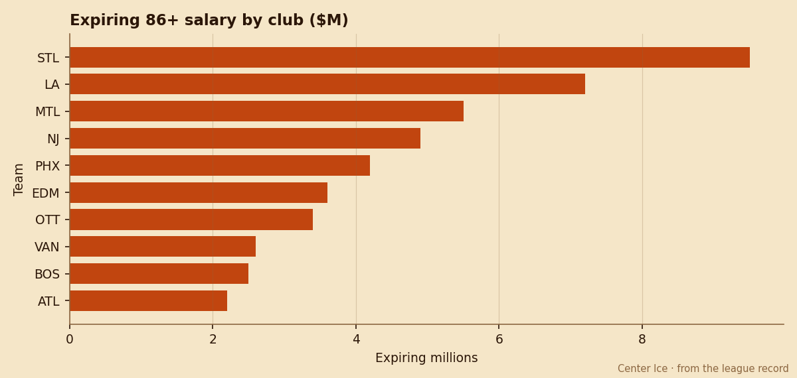

LA's Dressing Room Is 3rd Happiest in the League. $7.20M Walks Next Summer.
Three top-tier players become unrestricted free agents this July, the Kings sit at 40 points, and the trade deadline is 38 days away.
 E.J. "Ears" CallahanInsider · The Hot Stove
E.J. "Ears" CallahanInsider · The Hot Stove

LA shops expiring contracts before the deadline

 Los Angeles Kings carries the league's third-best club morale at 97.8, behind only
Los Angeles Kings carries the league's third-best club morale at 97.8, behind only  Colorado Avalanche at 99.0 and
Colorado Avalanche at 99.0 and  Tampa Bay Lightning at 98.0. The Kings also carry the 3rd-lowest attendance in the league at 13,230 per game, 40 standings points, and $1.48M per point of payroll.
Tampa Bay Lightning at 98.0. The Kings also carry the 3rd-lowest attendance in the league at 13,230 per game, 40 standings points, and $1.48M per point of payroll.
And they have $7.20M in top-tier salary expiring this summer across three players rated 84 or above. That is the second-largest single-year liability among teams currently outside a playoff position, behind only  St. Louis Blues at $9.50M from one name.
St. Louis Blues at $9.50M from one name.

Three Kings sit on the Bureau's top-10 morale list at a perfect 100: Jared Aulin77 (77 overall),  Jaroslav Modry79 (79), and
Jaroslav Modry79 (79), and  Jason Allison84 (84). They like it there. But 40 points in 44 games is a franchise with no argument to make to a pending free agent in July, and $1.48M per standings point is a payroll the front office will want to shed before it grows again.
Jason Allison84 (84). They like it there. But 40 points in 44 games is a franchise with no argument to make to a pending free agent in July, and $1.48M per standings point is a payroll the front office will want to shed before it grows again.
The July wave
STL's $9.50M sits with a contender: 57 points, 2nd in the Central, and a buyer at the deadline. They can win enough to make a re-signing conversation viable. LA cannot. The Kings trail  Dallas Stars by 22 points in the Pacific with 38 days left and no realistic path to 80.
Dallas Stars by 22 points in the Pacific with 38 days left and no realistic path to 80.
The same logic applies to  Phoenix Coyotes at $4.20M from one expiring name: 40 points, the league's lowest attendance at 11,680, and a front office that has already built a 628-prestige-points franchise with no playoff runway. Phoenix will sell. LA should too.
Phoenix Coyotes at $4.20M from one expiring name: 40 points, the league's lowest attendance at 11,680, and a front office that has already built a 628-prestige-points franchise with no playoff runway. Phoenix will sell. LA should too.
LA is a different kind of seller because the dressing room is happy. Teams selling from bad rooms usually can't move anything because the players are asking to be traded. These three expiring names will still perform through February, still carry value on the market, and still answer trade calls from contenders who need 84-79-77-rated depth for a playoff push.
The read
League sources say LA has taken calls on all three. No deal is close. The Kings are holding their picks steady at 3 (1 first-rounder), and they sit 14th in the per-point column with $15.01M in profit, so there is no payroll emergency forcing a fire sale before March. But the trade deadline is 38 days out, and after that these three men play out their contracts knowing the Kings will not be paying them in September, while the room stays happy and the value leaks out on the ice instead of coming back as picks.